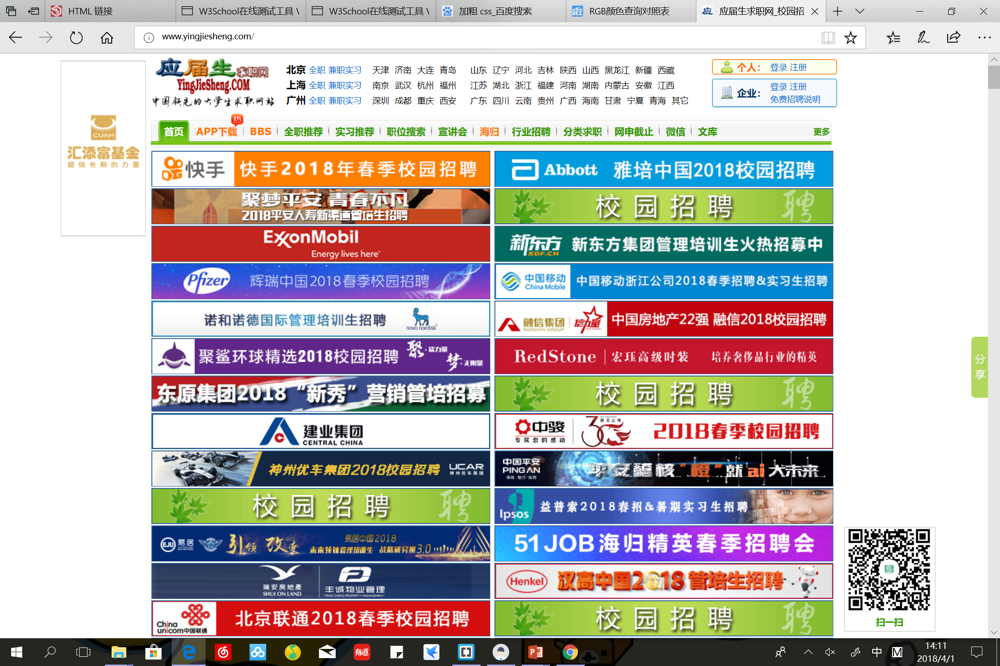
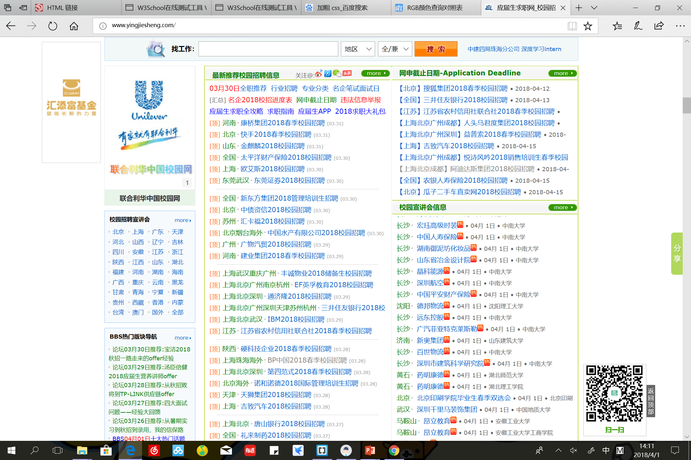
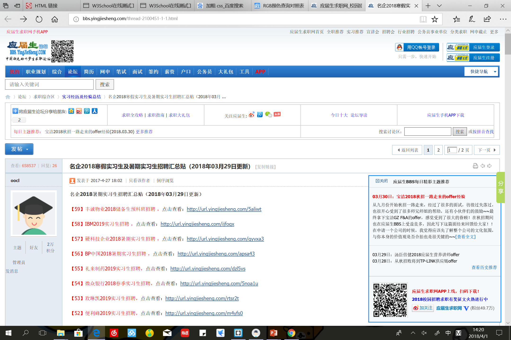
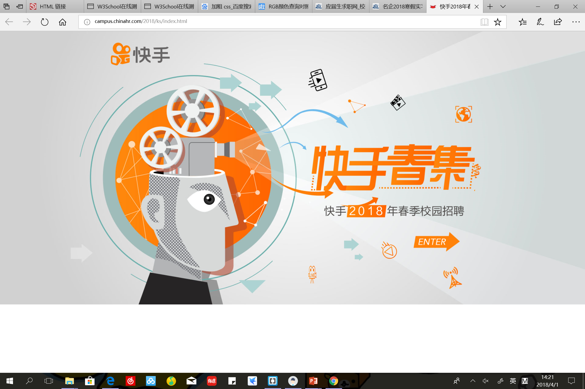
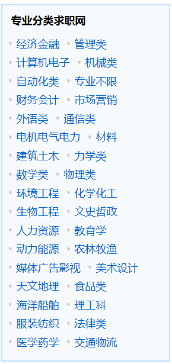
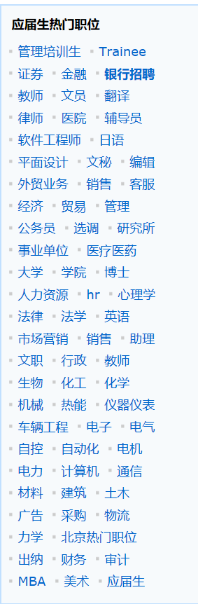
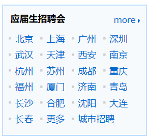

If you want to gather information of all kinds, Yingjiesheng is the best option. This website offers information about Campus recruiting, Internship and Summer Camp from international enterprise to local small business. It is perfectly designed for confused gradutes-to-be.
Say that you would gradute soon. The following are the steps for you to make the best use of this website.


You can either register an account or not. (Because you cannot submit your resume on this website to a company anyway)
Click the the piece of job or internship information you are interested in and you will be either direct to a new page with more details

or the exact company website.
You can select more specific categories, such as city, major, and position.
  
In all, this is a well-organized website of all different kinds of information, and perfect for the worried us.